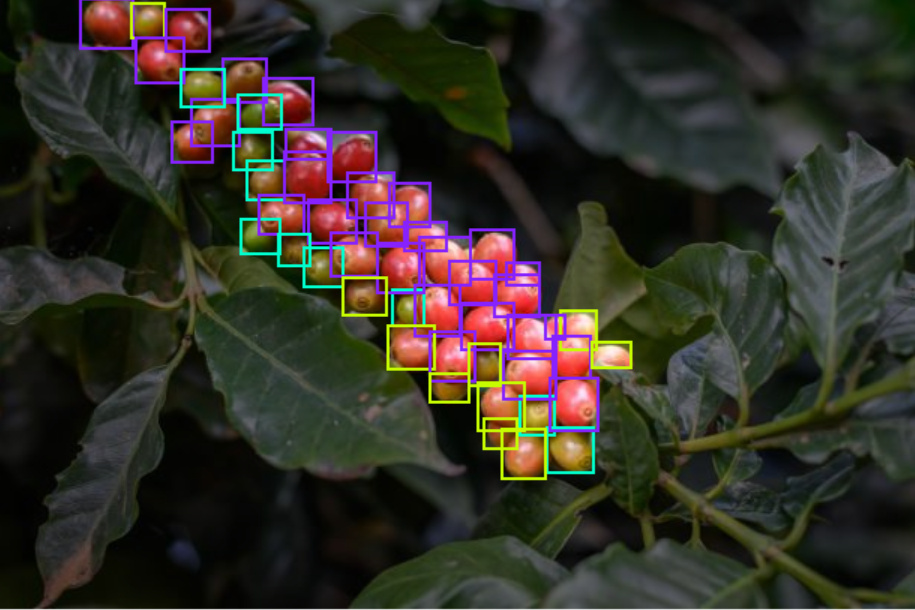
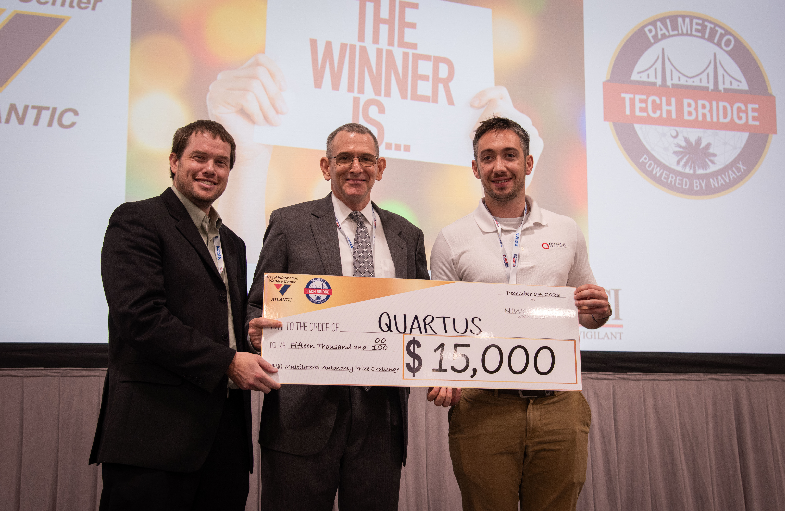

Skills
- Python, C++, MATLAB
- OpenCV, PyTorch, TensorFlow
- 3D Reconstruction, SLAM, Depth Estimation
- Linux, Git, Docker, AWS
Work Experience

Cherry Detection for Robotic Harvesting
- Trained a YOLO object detection model to identify ripe and unripe cherries.
- Used foundational vision models to accelerate and improve data labeling workflows.
- Deployed the model on a stereo camera system for real-time inference in the field.
- Mapped cherry locations in 3D and estimated optimal picking angles using surface normal analysis.

3D Mapping Using Visual SLAM
- Won a U.S. Navy computer vision challenge focused on object detection under out-of-domain and adversarial conditions.
- Leveraged foundational models, including Grounding DINO and CLIP, to achieve robust zero-shot detection across challenging image distributions.
- Demonstrated superior generalization and resilience against adversarial shifts compared to traditional supervised detectors.
- The success of the project led to follow-on funding to develop MLOps tools for adversarial data detection and dataset quality analysis.
- Expanded the work to support the U.S. Army by applying foundational models to tactical object detection scenarios with limited labeled data.

Camera Calibration & Depth Estimation
- Worked on PixelTraq, a high-precision camera calibration system for professional imaging and robotics.
- Used PixelTraq to generate accurate intrinsic and extrinsic models for a custom stereo camera system.
- Integrated calibrated stereo pairs into a vision pipeline for synchronized capture and depth estimation.
- Applied deep learning disparity networks to generate high-fidelity depth maps from stereo images.
- Enabled accurate 3D perception for use cases such as object localization and robotic manipulation.
Contact
Email: mfschall15@gmail.com